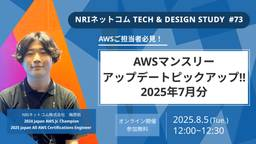
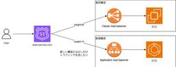
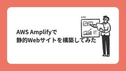
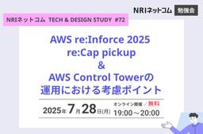
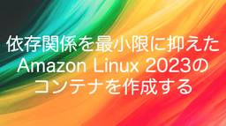

Technology - NRIネットコムBlog
https://tech.nri-net.com/archive/category/Technology
NRIネットコム社員が業務で利用している幅広い技術やナレッジについて紐解くブログメディアです。
フィード

AWSマンスリーアップデートピックアップ!! 2025年7月分 ～NRIネットコム TECH & DESIGN STUDY #73～
Technology - NRIネットコムBlog
こんにちは、ブログ運営担当の海野です。 8/5（火）12:00～12:30 当社主催の勉強会「NRIネットコム TECH & DESIGN STUDY #73」が開催されます!! 今回のTECH & DESIGN STUDYでは、日々数多く発表されているAWSのアップデートのうち、当社の腕利きエンジニア目線で厳選した前月のアップデート情報をお話させていただきます！ 【登壇者】 梅原航 クラウドエンジニア 2024 Japan AWS Jr. Champion 2025 Japan All AWS Certifications Engineer 【日程・タイムスケジュール】 8/5（火） 12:…
1日前
手動からの解放！！Strands Agentsで実現する総合テスト自動化
Technology - NRIネットコムBlog
はじめに こんにちは。インフラエンジニア二年目の井手亮太です。最近、私は「総合テスト」という業務を経験しました。 総合テストとは、システムの振る舞いや能力が、要件・仕様通りであるか確認することで、主に調査フェーズとエビデンス取得フェーズで構成されます。 総合テスト概要 具体的に何をしたのか 私はこれまで、手動とAWS CLIの2つの方法で総合テストに取り組んできました。 どちらにも課題があり、正直なところかなり苦労しました。 実際に取り組んだテスト手法 手動の場合の課題 非常に時間がかかる 人的ミスが発生しやすい CLI の場合の課題 シェルの知識に乏しかったのでスクリプト実装に時間がかかる …
2日前

Amazon Route 53加重ルーティングでCanary Release 1
1
Technology - NRIネットコムBlog
本記事は AWSアワード受賞者祭り 9日目の記事です。 ✨🏆 8日目 ▶▶ 本記事 ▶▶ 10日目 🏆✨ はじめに 想定するシーン 加重ルーティングとは 設定方法 採用するメリット 注意点 まとめ はじめに AWSアワード受賞者祭りということで投稿させていただきます。北野と申します。 この度は、2025 Japan All AWS Certifications Engineers に選出いただきました。 約4年前にクラウドエンジニアへ転向した際には、すべての認定資格を取得できるとは思ってもいませんでしたが、チームの素晴らしい仲間、上司に支えられここまでやって来られたと思っております。感謝申し上…
2日前

AWS Amplifyで静的Webサイトを構築してみた
Technology - NRIネットコムBlog
クラウド事業推進部の石倉です。 今回はAWS Amplifyに興味を持ったことをきっかけに静的Webサイトを構築してみました。 Amplifyを使った方法に加え他の構成パターンでも構築してみたのでご紹介します。 Webサイトの内容はVite+Reactアプリケーションです。 ローカル環境準備 パターン１）S3 + CloudFront パターン２）Amplify(+S3) パターン３）Amplify(+GitHub, CI/CD) 最後に 参考 ローカル環境準備 はじめにローカル環境にVite+Reactアプリケーション環境を用意します。と言ってもこちらのコマンドだけでできます。 npm cr…
3日前

Amazon Bedrock AgentCoreのRuntime、Built-in Tools、Gatewayを実装して試してみる 4
Technology - NRIネットコムBlog
本記事は AWSアワード受賞者祭り 8日目の記事です。 ✨🏆 7日目 ▶▶ 本記事 ▶▶ 9日目 🏆✨ はじめに 1. AgentCore Runtime 主な特徴 ローカルで実行してみる AWSへのデプロイ 2. AgentCore Built-in Tools 主な特徴 ツール単体で実行してみる コード 実行結果 ライブラリの確認 AgentCore Runtimeから使ってみる コード 出力結果 3. AgentCore Gateway 主な特徴 LambdaからGatewayを作成する Lambda関数の作成 コード Gatewayの作成 Strands Agentsから使ってみる コ…
3日前

AWS re:Inforce 2025 Update/AWS Control Tower運用ポイント ～NRIネットコム TECH & DESIGN STUDY #72～
Technology - NRIネットコムBlog
こんにちは、ブログ運営担当の海野です。 7/28（月）19:00～20:00 当社主催の勉強会「NRIネットコム TECH & DESIGN STUDY #72」が開催されます!! 今回のTECH & DESIGN STUDYでは、AWS re:Inforce 2024で打ち出された"Culture of Security"に続き、AWS re:Inforce 2025 からのメッセージと主要なアップデートについて振り返ってみます。 ・新しい IAM Access Analyzer 機能を使用して、重要な AWS リソースへの内部アクセスを検証 ・新しい AWS Security Hub でセ…
3日前

依存関係を最小限に抑えたAmazon Linux 2023のコンテナを作成する
Technology - NRIネットコムBlog
本記事は AWSアワード受賞者祭り 7日目の記事です。 ✨🏆 6日目 ▶▶ 本記事 ▶▶ 8日目 🏆✨ ドーモ、浮田です。 昼食に素うどんばかり食べていたので、上司に心配されていました。 最近は釜玉うどんにバージョンアップしたので、上司も安心することでしょう。 はじめに コンテナイメージを小さくすることのメリット Amazon Linux 2023を使うメリット コンテナイメージの作成 dockerfileの解説 ビルド結果 おわりに はじめに こんなことができるんだよ〜という記事です。 コンテナのベストプラクティスの一つに、不要なパッケージをインストールしない*1ことが挙げられています。 こ…
4日前

夜ぐっすり眠るための監視分類 185
Technology - NRIネットコムBlog
本記事は AWSアワード受賞者祭り 6日目の記事です。 ✨🏆 5日目 ▶▶ 本記事 ▶▶ 7日目 🏆✨ こんにちは、玉邑です。 年齢を重ねるにつれて、睡眠時間が翌日のパフォーマンスに大きく影響することを実感するようになりました。よく眠ることの大切さを、改めてしみじみと感じています。今回は、そんな貴重な睡眠時間をしっかり確保するための工夫についてお話しします。 ITシステムの運用に携わっている方であれば、夜間や休日のオンコール*1対応を経験されたことがあるのではないでしょうか。 私自身も、15年以上前にシステム運用を担当していた頃は、連日鳴り止まないオペレーターからの電話に疲弊していました。 当…
5日前

自分の技術力を言語化しよう
Technology - NRIネットコムBlog
本記事は AWSアワード受賞者祭り 5日目の記事です。 ✨🏆 4日目 ▶▶ 本記事 ▶▶ 6日目 🏆✨ はじめに Japan AWS Top Engineer Programとは 1. 数字で語る 2. STAR構文 番外編：生成AIに添削してもらう まとめ はじめに こんにちは、髙橋です。 先日、AWSより「2025 Japan AWS Top Engineers」と「2025 Japan All AWS Certifications Engineers」という2つのアワードに選出していただきました。 aws.amazon.com aws.amazon.com 自分の能力がAWSからオフィシ…
9日前
Amazon CloudWatch アラームのデータポイントはどのように評価されるのか
Technology - NRIネットコムBlog
本記事は AWSアワード受賞者祭り 4日目の記事です。 ✨🏆 3日目 ▶▶ 本記事 ▶▶ 5日目 🏆✨ はじめに 発生した事象 前提 アラームの設定 検知した内容 データポイントの評価の整理 (参考)対応方法 最後に はじめに こんにちは！林です！ この度、2025 Japan All AWS Certifications Engineers に選出いただきました。 努力がこうして評価されるのは非常にうれしいです。 ブログを書くのは2回目なので簡単に自己紹介させていただきます。私は入社後、インフラエンジニアとしてネットワークやサーバの構築・運用を行っていました。最近チームが変わり、この1〜2年…
10日前
CloudFront SaaS Managerでマルチテナントを管理する
Technology - NRIネットコムBlog
本記事は AWSアワード受賞者祭り 3日目の記事です。 ✨🏆 2日目② ▶▶ 本記事 ▶▶ 4日目 🏆✨ こんにちは。梅原です。 この度、2025 Japan All AWS Certifications Engineersに選出いただきました。 今年に入ってから駆け込みで5個取得した甲斐がありました。 さて、本ブログはネットコムの全AWS受賞者によるAWSアワード受賞者祭り3日目の記事です。 タイトルにもある通り、最近発表されたAmazon CloudFront SaaS Managerの機能について紹介します。 aws.amazon.com Amazon CloudFront SaaS M…
11日前
Amazon Q Developer IDEのプロンプト整備とMCP活用によるpull request作成自動化 ～実践編～
Technology - NRIネットコムBlog
本記事は AWSアワード受賞者祭り 2日目②の記事です。 ✨🏆 2日目① ▶▶ 本記事 ▶▶ 3日目 🏆✨ 本ブログは下記のブログの続編となっています。併せてご覧いただけますと幸いです。 tech.nri-net.com 6. 開発～pull request(PR)の自動化 プロンプトの入力 ブランチのチェックアウト チケットの内容確認 コーディング ビルド、UT/IT実行 PRの作成 7. まとめ 冪等性は担保されているのか？ PR自動化の利用可能性 利点と課題のまとめ 終わりに 6. 開発～pull request(PR)の自動化 では実際にチケットの内容を読み込み、PRを作成するまでの一…
12日前
Amazon Q Developer IDEのプロンプト整備とMCP活用によるpull request作成自動化 ～事前準備編～
Technology - NRIネットコムBlog
本記事は AWSアワード受賞者祭り 2日目①の記事です。 ✨🏆 1日目 ▶▶ 本記事 ▶▶ 2日目② 🏆✨ 1. はじめに 本ブログの概要 2. Amazon Q Developer とは 3. Amazon Q Developerのプロンプト操作 Amazon Q Chat チャットコマンド プロンプトファイル 利用方法 プロジェクトルール コンテキスト インラインコメント 4. Model Context Protocol (MCP) 5. 事前準備 チケットの起票 プロンプトファイルの編集 プロジェクトルールの記載 MCP設定 1. はじめに 皆さんこんにちは！入社2年目アプリケーション…
12日前
AWS受賞者分析エージェントをStrands Agentsで作ってみた
Technology - NRIネットコムBlog
本記事は AWSアワード受賞者祭り 1日目の記事です。 ✨🏆 告知記事 ▶▶ 本記事 ▶▶ 2日目 🏆✨ こんにちは、そろそろ人間ドックの日が近づいているので運動する準備を始めている志水です。シアトル帰りで英語の勉強の準備も今始めてます。 はじめに 2025年のAWS受賞者が発表され、NRIネットコムからも多くの方が受賞されて感慨深いですね。私も引き続きAmbassadorとして継続できて安心しています。 まずは、今年のNRIネットコムのAll Cert取得者が何人だったか聞いてみましょう。 なんと今年は21名も全冠取得者がいるようですね！これだけで252個の資格が取得されているというのはすご…
13日前
Strands Agentsで発見したInfrastructure as Promptの可能性
Technology - NRIネットコムBlog
こんにちは、最近やっと家にプールをリリースした志水です。夏x子供の全てを解決するのは筋肉ではなくプールです。プールこそ正義です。 今日はプールとは全く関係のないStrands Agentsについての話をしたいと思います。 はじめに 生成AI技術の進歩により、インフラ構築の手法も大きく変化しつつあります。従来のコードベースでの構築から、自然言語による意図伝達による構築へと進化が続いています。 IaP（Infrastructure as Prompt）とは IaP（Infrastructure as Prompt）は、インフラ構築の新しいパラダイムです。従来のIaC（Infrastructure …
15日前
ブログイベント「AWSアワード受賞者祭り」開催します!
Technology - NRIネットコムBlog
こんにちは、ブログ運営担当の小野です。 今月のブログイベントのお知らせです！ 2025年6月25日に行われたAWSのイベント「AWS Summit Japan」にて、NRIネットコムの社員24名が以下に選出・表彰されました！！ 2025 Japan All AWS Certifications Engineers 2025 Japan AWS Top Engineers 2025 Japan AWS Ambassadors 2025 Japan AWS Jr. Champions 今回は、選出・表彰を記念して、「AWSアワード受賞者祭り」と題して受賞者がブログを執筆します！！ 7/14~8/1…
15日前
「AWS re:Inforce 2025」速報とAWS Organizations活用によるセキュリティ向上・コスト最適化事例
Technology - NRIネットコムBlog
こんにちは、ブログ運営担当の小野です。 7月14日(月)17:00～18:00、当社主催ウェビナー「『AWS re:Inforce 2025』速報とAWS Organizations活用によるセキュリティ向上・コスト最適化事例」を開催します。 【ウェビナー概要】 今回のウェビナーでは、AWS re:Inforce 2024で打ち出された”Culture of Security”に続き、AWS re:Inforce 2025からのメッセージをイベントの内容から振り返ってみます。 さらに、”Culture of Security” のための一つの手段としてAWS Organizationsの活用事…
15日前
IaC運用の落とし穴を防ぐ：AWS CloudFormation Stackの構成逸脱監視 / Amazon Q Developer IDEのプロンプト整備とMCP活用によるpull request作成自動化 ～NRIネットコム TECH AND DESIGN STUDY #71～
Technology - NRIネットコムBlog
こんにちは、ブログ運営担当の海野です。 7/22（火）19:00～20:00 当社主催の勉強会「NRIネットコム TECH & DESIGN STUDY #71」が開催されます!! 今回のTECH & DESIGN STUDYでは、当社エンジニアから「IaC運用の落とし穴を防ぐ：AWS CloudFormation Stackの構成逸脱監視」と、「Amazon Q Developer IDEのプロンプト整備とMCP活用によるpull request作成自動化」についてお話します。 【1人目】IaC運用の落とし穴を防ぐ：AWS CloudFormation Stackの構成逸脱監視 IaCの活用…
18日前
初監修！「要点整理から攻略する」シリーズにクラウドプラクティショナーが加わりました。
Technology - NRIネットコムBlog
ご無沙汰しております。小林です。 1年ぶりのブログです。 先日の記事でも紹介されましたが、 7/14に要点整理から攻略する『AWS認定 クラウドプラクティショナー』が発売となります。 執筆陣は下記のとおりで、私は今回初めて監修という立場で書籍に関わっております。 著者 手塚拓也 五十嵐涼 中山透 監修 小林恭平 「要点整理から攻略する」シリーズについて マイナビ出版より発行されている試験対策本で、現在AWS認定とG検定の対策本が出ています。 AWS認定では私が執筆に関わった「セキュリティ - 専門知識」をはじめとして、下記のカテゴリの対策本があります。 （発行順。試験の改定により絶版となったも…
19日前
AWS Summit Japan 2025 参戦日記
Technology - NRIネットコムBlog
はじめに AWS Summit Japan 2025とは セッションピックアップ AWS-13 データと AI を統合する Amazon SageMaker Unified Studio の世界 AWS-44 グラフデータ実践活用 - Amazon Neptune による OneGraph と GraphRAG の実装 C2-8 AIエージェント最前線！ Amazon Bedrock、Amazon Q、そしてMCPを使いこなそう AWS Expo ブースピックアップ 今日の夕食、冷蔵庫と相談してみた AIシナリオライター 株式会社シーイーシーさん Notion Labs Japan合同会社さん…
20日前
『AWS認定 クラウドプラクティショナー』の試験対策本を書きました。
Technology - NRIネットコムBlog
こんにちは。中山です。 今回、AWSの基礎コース試験の1つである「AWS認定 クラウドプラクティショナー」の試験対策本を執筆しましたので、内容についてご紹介します。 本のタイトルは「要点整理から攻略する『AWS認定 クラウドプラクティショナー』」で、2025年7月14日に出版予定（現在、予約受付中）です。 要点整理から攻略する『AWS認定 クラウドプラクティショナー』作者:NRIネットコム株式会社,中山 透,手塚 拓也,五十嵐 涼マイナビ出版Amazon 本の内容について 章立ては次のようになっています。 第1章 AWS試験概要と学習方法 第2章 Amazon Web Servicesって？ …
24日前
【現地レポート】AWS Summit Japan 2025 参加記
Technology - NRIネットコムBlog
はじめに こんにちは！2年目の井手亮太です。6月25日、26日に開催された AWS Summitに行ってきましたので、現地の様子などを皆様にお伝えできればと思います！ イベント概要 イベントの名称 : AWS Summit Japan 開催日 : 6月25日（水）、6月26日（木） 会場 : 幕張メッセ (リモート参加も可能) 参加費用 : 無料 aws.amazon.com 参加できなかった方もご安心を！7月11日（金）までアーカイブ配信されていますので、ぜひチェックしてみてください！ https://jpsummit-smp25.awsevents.com/public/applicati…
25日前
【生成AI × ゲーム開発】Amazon Q CLIで始める対話型ゲーム開発
Technology - NRIネットコムBlog
はじめに 作成したゲーム 実行環境 作成過程 おわりに はじめに こんにちは！山本です！ 今回AWS公式で紹介された「Amazon Q CLIを使ってゲームを作ろう」キャンペーンに参加しました。このキャンペーンでは、Amazon Q CLIを活用してオリジナルのゲームを開発し成果物を共有することで、なんとTシャツがもらえるというユニークな企画です。今回はこのキャンペーンをきっかけに、簡単なタイピングゲームを作成してみました。この記事では、ゲームの概要や開発過程についてご紹介します。 aws.amazon.com 作成したゲーム 今回作成したタイピングゲームがこちらになります。 実行環境 本稿で…
1ヶ月前
Kubernetesのスケーリングについて触ってみた 〜Horizontal Pod AutoscalerとCluster Autoscaler〜
Technology - NRIネットコムBlog
クラウド事業推進部の石倉です。 今回はKubernetesのスケーリングで利用されるPodのスケーリングをするHorizontal Pod AutoscalerとノードのスケーリングをするCluster Autoscalerについて手を動かしながら確認してみたのでハンズオンのような形で紹介します。 Horizontal Pod Autoscalerについて 準備 HPAを試してみる Cluster Autoscalerについて 準備 Cluster Autoscalerを試してみる 最後に 参考 Horizontal Pod Autoscalerについて まずはHorizontal Pod A…
1ヶ月前
CloudFormation Stackの構成逸脱を定期監視する
Technology - NRIネットコムBlog
本記事は オブザーバビリティウィーク 5日目の記事です。 💻📄 4日目 ▶▶ 本記事 ▶▶ 6日目 🔔🏢 はじめに ドリフト検出とは 監視構成 実装手順 実装の流れ 1. EventBridgeスケジュールでLambda①を定期実行 2. Lambda①でCloudFormation ドリフト検出を実行 3. ドリフト検出された結果をEventBridgeルールでキャッチし、Lambda②を実行 4. Lambda②でドリフト検出の結果を取得し、SNSで通知 実際の通知を確認 実運用のおすすめ AWS Configルールとの違い 終わりに はじめに こんにちは、藤本です。オブザーバビリティウィ…
1ヶ月前
Amazon CloudWatchのAPI活用術 〜グラフの自動スクリーンショット〜
Technology - NRIネットコムBlog
本記事は オブザーバビリティウィーク 4日目の記事です。 💻📄 3日目 ▶▶ 本記事 ▶▶ 5日目 🔔🏢 はじめに 想定するシーン 解決したい課題 そこでMetricWidgetを活用しませんか？ MetricWidgetの利点 MetricWidgetからグラフのスクリーンショットを取得する方法 作業のアウトライン Amazon CloudWatchのMetricWidgetを取得 pythonを使用したグラフのスクリーンショットの自動取得 まとめ はじめに オブザーバビリティウィーク4日目を担当させていただきます。北野と申します。 現在の業務ではクラウドサービス（AWS）を用いたお客様のア…
1ヶ月前
【速報】NRIネットコム社員が「2025 Japan AWS Ambassadors」「2025 Japan AWS Top Engineers」「2025 Japan AWS Jr. Champions」「2025 Japan All AWS Certifications Engineers」に選出されました！
Technology - NRIネットコムBlog
こんにちは、ブログ運営担当の栗田です。 本日6/25に発表されました「2025 Japan AWS Ambassadors」「2025 Japan AWS Top Engineers」「2025 Japan AWS Jr. Champions」「2025 Japan All AWS Certifications Engineers」に、NRIネットコム社員が選出・表彰されました！！ 本ブログでは速報として、選出・表彰されたメンバーをご紹介いたします。（メンバーの記載は五十音順となります） 2025 Japan AWS Ambassadors NRIネットコムからは、佐々木拓郎・志水友輔・丹勇人…
1ヶ月前
2025 Japan AWS Jr. Championsに選出いただきました
Technology - NRIネットコムBlog
はじめに Japan AWS Jr. Championsとは Japan AWS Jr. Championsになるために求められること 活動報告について Challenge Influence Output 活動への意気込み 終わりに はじめに こんにちは、藤本です。 本日6月25日（水）APN Blogにて「2025 Japan AWS Jr. Champions」が発表され、私もその一員として選出いただきました。 aws.amazon.com 入社当初から目指していた表彰プログラムであり、今回こうして一つの目標を達成できたことに、ほっとしています。 今後は「Japan AWS Jr. Ch…
1ヶ月前
【Cfnテンプレートあり！】 AWS監視をもっと自由に ！ CloudWatch Metric Math活用術3選
Technology - NRIネットコムBlog
本記事は オブザーバビリティウィーク 3日目の記事です。 💻📄 2日目 ▶▶ 本記事 ▶▶ 4日目 🔔🏢 はじめに Amazon CloudWatch Metric Math とは 実務で使える評価指標3選 ①移動平均を使った異常検知スコア ②ALBのターゲットグループリクエスト集中度スコア ③アラーム感度スコア おわりに はじめに こんにちは！オブザーバビリティウィーク3日目担当の山本です！ 皆さんは、 AWS 環境に構築したシステムに監視を入れる際に Amazon CloudWatch（以後、CloudWatch）アラームの評価値はどのように設定しているでしょうか。 通常 CloudWat…
1ヶ月前
Cloud Monitoringで複数プロジェクトを監視しよう
Technology - NRIネットコムBlog
本記事は オブザーバビリティウィーク 2日目の記事です。 💻📄 1日目 ▶▶ 本記事 ▶▶ 3日目 🔔🏢 1. はじめに 2. 実装 2.1 プロジェクトの追加 2.2 アラートポリシーの設定 3. アラートの確認 4. まとめ こんにちは。横田です。 本ブログでは監視用のプロジェクトを使用して複数プロジェクトのリソースを監視する方法について話します。 想定する読者層は以下の通りです。 Cloud Monitoringを触り始めた人 Google Cloudのオブザーバビリティに興味がある人 1. はじめに 使用するサービスはCloud Monitoringです。本ブログで検証する構成は下図に…
1ヶ月前